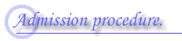

close
ご案内
ここではCESTの参加方法の手順を説明します。
CESTの会員は
CESTで行われる組込みソフトウェア基盤技術の共同研究・開発に参加できます。
月１回行われるCEST技術交流会に参加できます。
希望する場合CESTメイリングリストに参加できます。
セミナーなどでは参加費などの面でCEST会員は一般参加より有利になります。
など あります。
＞＞ 詳細は事業計画
をごらんください。
CESTへの参加を希望される方は『次へ』を押してください。